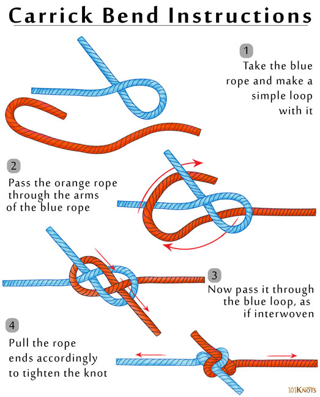

Carrick Bend
This square knot alternate joins two ropes together securely, and is easier to untie than a square knot.
How to tie a carrick bend:
To tie the carrick bend, form a loop with the free end of one rope. Pass the other rope’s free end under the first loop, and then over then under as seen in the picture. Thread the free end across the loop passing under itself, and pull on both standing ends to tighten.
